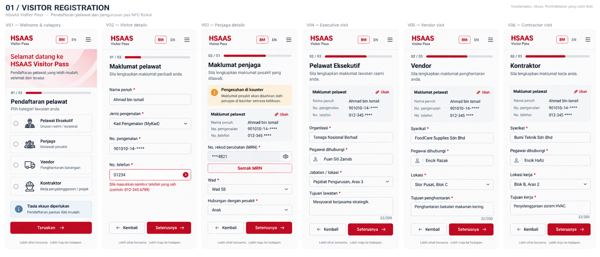
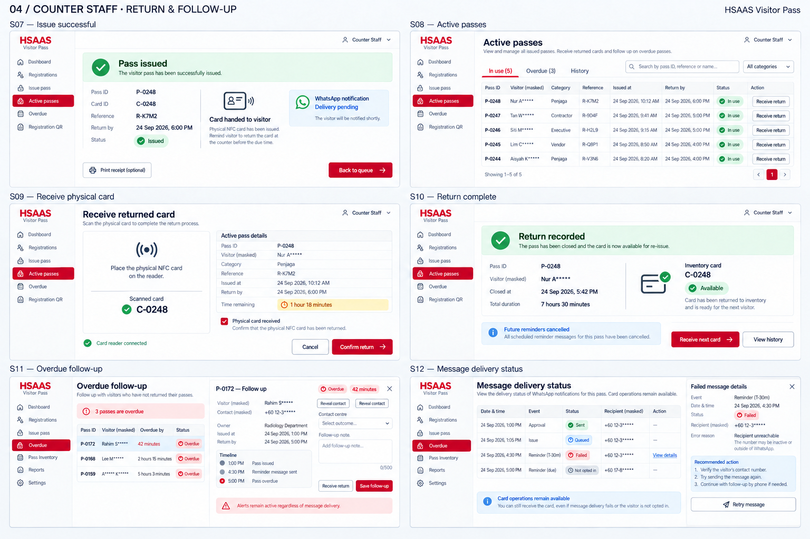

HSAAS — UI 图片稿 v301 / VISITOR REGISTRATION

本图页面与状态
- V01 · Welcome & category
BM: 'Pendaftaran pelawat', 'Pilih kategori'. Four radio cards: Pelawat Eksekutif, Penjaga, Vendor, Kontraktor. Counter 01 and 'Tiada akaun diperlukan'. Primary 'Teruskan'. - V02 · Visitor details
Step 1 of 3. 'Maklumat pelawat'. Nama penuh, Jenis pengenalan, No. pengenalan, No. telefon. One field shows clear inline validation. Back and 'Seterusnya'. - V03 · Penjaga details
Step 2 of 3. MRN, Wad, Hubungan dengan pesakit. Sample masked MRN ***4821. Amber 'Pengesahan di kaunter' and retained values. 'Semak MRN', 'Seterusnya'. - V04 · Executive visit
Step 2 of 3. 'Pelawat Eksekutif'. Organisasi, Pegawai dihubungi, Jabatan / lokasi, Tujuan lawatan. Restrained form, 'Seterusnya'. - V05 · Vendor visit
Step 2 of 3. 'Vendor'. Syarikat, Pegawai dihubungi, Lokasi, Tujuan penghantaran. 'Seterusnya'. - V06 · Contractor visit
Step 2 of 3. 'Kontraktor'. Syarikat, Pegawai dihubungi, Lokasi kerja, Tujuan kerja. 'Seterusnya'.
02 / VISITOR CONFIRMATION & NOTICES

本图页面与状态
- V07 · Review and consent
'Semak & hantar'. Category Penjaga, masked detail summary with edit links. Required privacy acknowledgement, separate OPTIONAL unchecked checkbox 'Saya bersetuju menerima notifikasi WhatsApp'. Text 'Pilihan ini tidak menjejaskan permohonan'. Primary 'Hantar permohonan'. - V08 · Submission receipt
'Permohonan diterima'. Public reference R-K7M2; 'Menunggu semakan'. No Pass ID or deadline. 'Sila ke Kaunter 01 untuk pengesahan'. 'Simpan rujukan'. Small illustrative reference QR and no personal data. - N01 · Approval notification
WhatsApp preview headed HSAAS. 'Permohonan diluluskan'. R-K7M2. 'Sila ke Kaunter 01 untuk mengambil kad fizikal'. No Pass ID, no return deadline. Clearly approval only. - N02 · Card issue notification
WhatsApp preview. 'Kad telah diserahkan'. Pass P-0248, reference R-K7M2, category Penjaga, 'Pulangkan sebelum 24 Sep, 6:00 PM', 'Kaunter 01'. No identification or patient information. - N03 · Before-due reminder
WhatsApp preview. 'Peringatan pemulangan'. Pass P-0248, 'Pulangkan kad sebelum 6:00 PM di Kaunter 01'. Warm amber reminder accent; no guarantee delivery. - N04 · Rejection notification
WhatsApp preview. 'Permohonan tidak diluluskan'. R-K7M2. 'Sila rujuk Kaunter 01 untuk bantuan'. No sensitive rejection reason; no Pass ID.
03 / COUNTER STAFF · REVIEW & ISSUE

本图页面与状态
- S01 · Staff sign in
Professional split layout: red brand panel with HSAAS wordmark and quiet line pattern, white 'Staff sign in' card with email, password, show password, Sign in, 'Contact administrator for access'. No public signup or role picker. - S02 · Counter dashboard
KPI cards: Awaiting review 12, Approved 8, In use 24, Overdue 3. New registrations table with category, arrival, status and Review. Card availability compact by category. 'Display registration QR' action. - S03 · Registration QR display
'Visitor registration QR'. Dominant illustrative QR on white card, Counter 01, HSAAS label, 'Scan to register'. Category All categories. Print and Full screen buttons. Caption 'Public registration link only'. - S04 · Review registration
Master-detail queue with R-K7M2 selected. Masked ID/phone/MRN; Penjaga, Ward 4A. MRN pending manual verification. Identity and ward verification checkboxes. 'Approve registration' and outlined 'Reject'. Label 'Approval does not issue a card'. - S05 · Reject registration
Queue background and focused rejection dialog. Reference R-K7M2, reason select and short internal note. 'Notify visitor if opted in'. Primary destructive 'Reject registration'; Cancel. - S06 · Scan and issue NFC
Approved registration R-K7M2. Stepper 'Approved / Scan card / Hand over'. Reader connected, scanned card C-0248, UID masked, category Penjaga, Available. Four validation ticks. Due date/time selection, physical handover checkbox, 'Issue physical pass'. No Pass ID assigned before confirmation.
04 / COUNTER STAFF · RETURN & FOLLOW-UP

本图页面与状态
- S07 · Issue successful
Success panel 'Pass issued'. Pass ID P-0248, card C-0248, reference R-K7M2, due 24 Sep 6:00 PM. 'Card handed to visitor'. WhatsApp queued status shown as secondary, 'Back to queue' action. - S08 · Active passes
Tabs In use / Overdue / History. Search and category filter. Table Pass ID, category, reference, issued at, return by, status, action. Masked visitor labels. 'Receive return' action. - S09 · Receive physical card
Return screen with scan target, scanned card C-0248, active Pass P-0248, due and issue summary. Checkbox 'Physical card received'. Primary 'Confirm return', Cancel. Scan disconnected small recovery link. - S10 · Return complete
'Return recorded' green success. P-0248 assignment closed at 5:42 PM, inventory card C-0248 'Available', future reminders cancelled. 'Receive next card' primary and View history secondary. - S11 · Overdue follow-up
Three overdue records. Selected P-0172 detail drawer: 42 minutes overdue, masked contact with authorised Reveal button, owner, prior timeline, contact outcome select, follow-up note and Save follow-up. Return action remains. Notice 'Alerts remain active regardless of message delivery'. - S12 · Message delivery status
Approval / Issue / Reminder events table. Sent, Queued, Failed, Not opted in labelled chips. Failed row offers View details. Notice 'Card operations remain available'. No automatic opt-in. Show a short failed-delivery drawer and retry guidance without changing pass state.
05 / ADMINISTRATOR · CARDS & ACCOUNTS

本图页面与状态
- A01 · Operations overview
KPIs total visits 126, in use 24, overdue 3, available 61. Category bar chart, utilisation chart, attention queue and recent protected changes. Label charts with values; not red only. - A02 · NFC card inventory
Table card code, masked UID, category, status and action. Available, Issued, Overdue, Lost, Disabled labelled statuses. Search, status filter, 'Register card' primary. No inventory status called Returned. - A03 · Register NFC card
Centered enrollment form with reader Connected, tap card region, UID read, Card code, Category, initial Available state. Save card. Small inline example 'UID already registered' below UID on a duplicate example, save disabled while duplicate. - A04 · Card detail & lifecycle
Card C-0172, currently Overdue. Assignment history and lifecycle timeline. Action 'Mark lost' opens reason-required dialog. Available-card actions Disable and conditional Restore shown as separate contextual examples. Clear 'Lost cards cannot be issued'. Never normal-return a lost card. - A05 · User management
User table Name, Email, Role, Status, Last sign-in. Counter Staff and Administrator roles. 'Create user' button and edit action. Small note 'Only administrators can manage users'. - A06 · Create or edit staff user
Side panel Name, Email, Role select Counter Staff / Administrator, status Active, Save changes. Adjacent compact disable confirmation with reason. Protection banner 'The last active administrator cannot be disabled or demoted' and disabled protected action.
06 / ADMINISTRATOR · GOVERNANCE & AUDIT

本图页面与状态
- A07 · Wards & categories
Tabs Wards / Visitor categories. Ward code, name, floor, active, edit. Four visitor category cards Executive, Penjaga, Vendor, Contractor with category-specific field settings. Add/edit ward drawer. - A08 · Operational settings
Sectioned form return deadline rules, pre-deadline reminder timing, retention, staff session timeout. WhatsApp opt-in requirement locked ON. MRN mode labelled 'Manual / mock until hospital integration approved'. Save changes and a concise change-reason field. Values labelled Proposed defaults. - A09 · Reports
Date range, category and ward filters. Visitors by category bars; daily trend; overdue and utilisation summary. Preview table; Export masked report. Synthetic demo data label, timezone MYT. - A10 · Audit log
Filter actor/action/date/status. Audit table with registration approved, issued, returned, user disabled and setting changed. Detail drawer actor, time, object reference, before/after safe values. No raw personal data. - A11 · Blockchain proof verifier
Sui Testnet badge. Selected RETURNED event proof: local hash vs on-chain hash, transaction digest abbreviated, confirmed time, green 'Match'. Verify proof button. Also compact states Pending, Failed and Mismatch distinctly labelled. No personal data on-chain. - A12 · Integration & retry monitoring
Cards MRN Manual mode, NFC workstation Offline, WhatsApp Failed 2, Sui proof Pending 4. Job rows with Retry failed job and View details. Clear calm banner 'Issue and return remain available during notification or proof delays'. Mismatch gets Investigate not success.
07 / EXCEPTIONS & SHARED STATES

本图页面与状态
- X01 · Form validation & MRN timeout
Mobile Penjaga form with top 'Sila semak maklumat' linked error summary, one missing required field inline error. Separate amber MRN timeout 'Maklumat disimpan. Pengesahan di kaunter tersedia'. Retain entered values; continue to manual verification. - X02 · NFC reader offline
Issue screen warning 'Reader disconnected'. Clear Reconnect and Check connection actions, disabled Issue physical pass. Separate small chips explaining unregistered card, wrong category, card unavailable. No bypass issue button. - X03 · Concurrent issue conflict
Issue modal banner 'This card was just issued at another counter'. Clear 'Scan another card' action, approved registration preserved. Adjacent small already-returned informational state 'Return already recorded', no duplicate return action. - X04 · Session & access
Sign-in card with 'Session expired. Sign in again'. Additional compact access-denied panel 'Administrator access required' and 'Back to dashboard'. No account signup, no privilege escalation. - X05 · Empty, loading & service error
Three clearly labelled mini-panels within one frame: queue skeleton with Loading label; empty queue 'No registrations waiting'; service failure 'Unable to load registrations' with Retry and last-updated time. Do not present zero as loaded data on failure. - X06 · Confirmation & focus states
Real account-disable confirmation with reason and Cancel / Disable account. Separate tiny component strip normal, focused, loading, disabled buttons, visible focus ring, success/warning/error labelled badges. Separate reference-expired mobile notice directing visitor to counter; no personal-data leak.